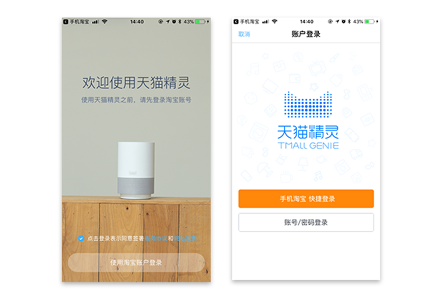
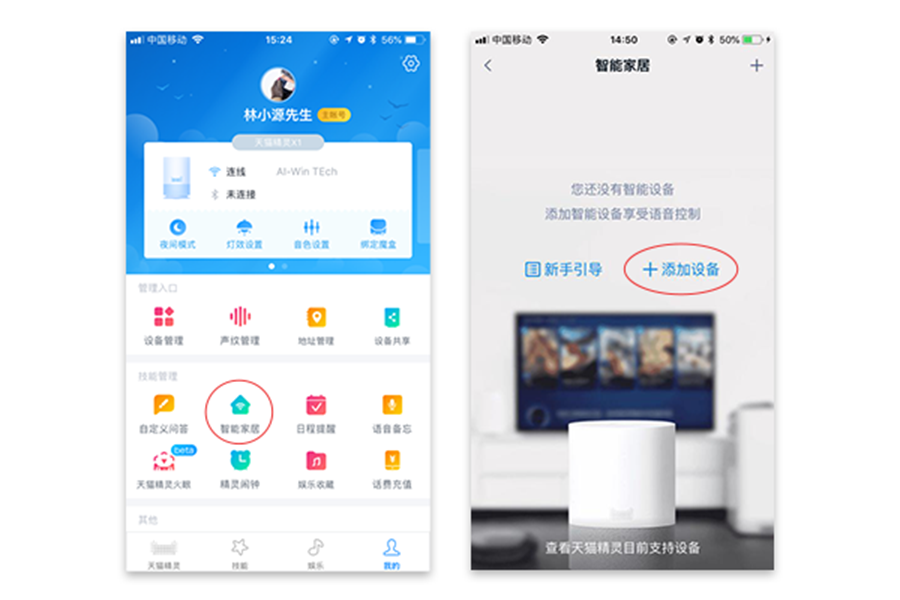

①Android版本可扫描说明书（快速操作指南）上的二维码下载，或前往各大应用市场搜索“艾韵智能”下载；
②iOS版本请前往App Store中搜“艾韵智能”下载。
下载“天猫精灵”APP
使用淘宝账户登录“天猫精灵”

添加天猫精灵
①点击“开始联网”；
②输入WiFi密码，点击“下一步”；
③按住天猫精灵设备顶部的麦克风静音按键直至白色灯光闪烁，开始连网；
④联网成功开始使用天猫精灵。
授权天猫精灵
①在“天猫精灵”APP“我的”页面点击“技能管理”中的“智能家居”选项；
②点击“添加设备”；

③选择“艾韵智能”；
④点击“绑定账号”；

⑤输入注册“艾韵智能”APP时填写的手机号码和对应的账号密码。点击“登录并授权”；
⑥授权成功后可以通过天猫精灵语音控制场景控A1；
备注：
①如果通过“艾韵智能”APP再次添加新的设备，需要到“天猫精灵”APP的“智能家居”页面刷新设备列表；
②当出现多个相同品类设备的时候，可以通过“选择设备位置”或“选择设备别名”来区分控制。